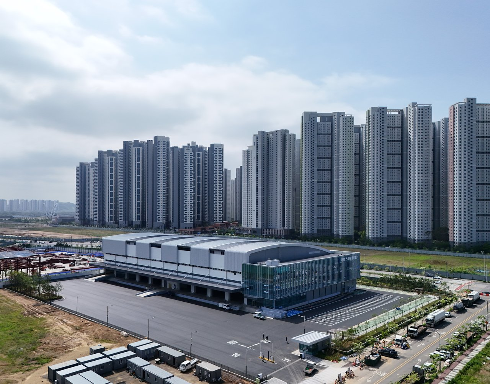
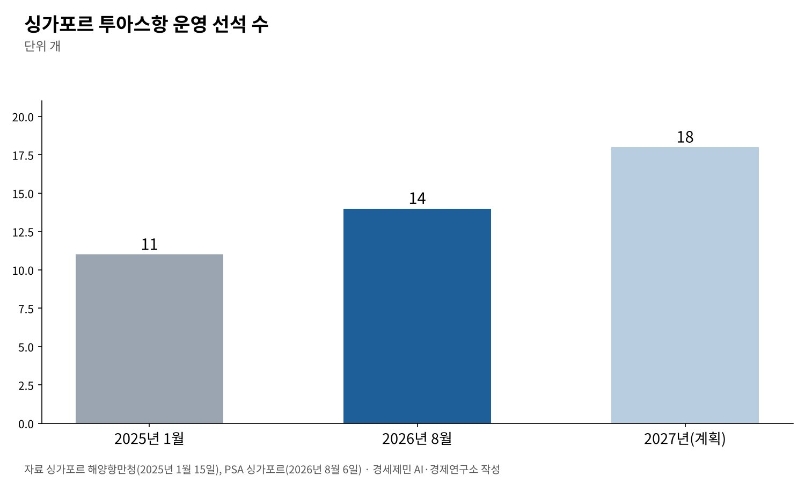
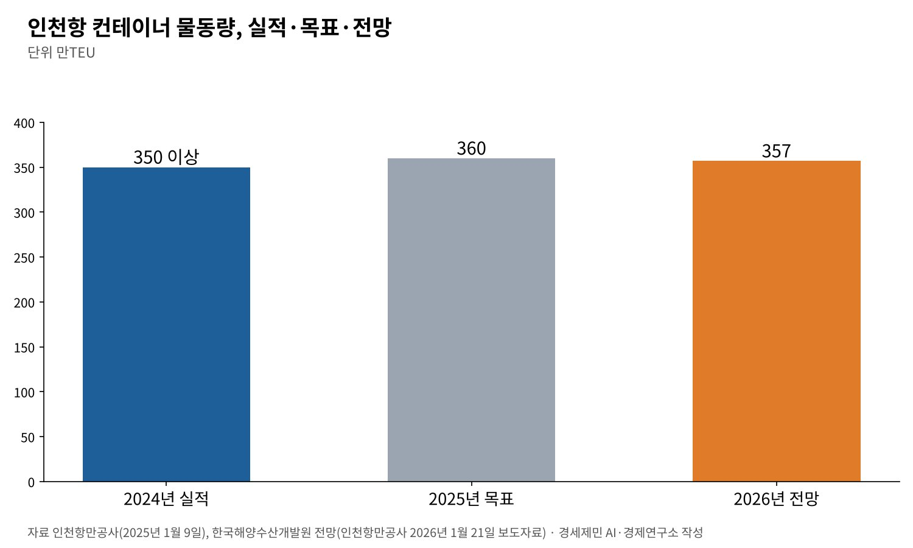
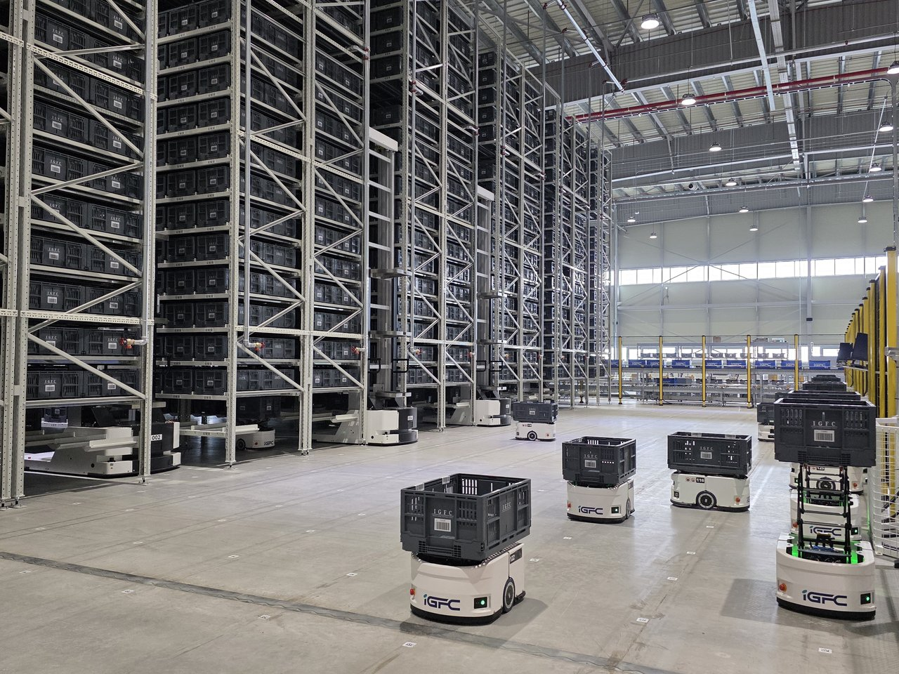

[경세제민] AI 대전환 시대, 인천항만 업계 포용적 성장 방안
미국 동부 항만노조, 파업 끝에 임금 62% 인상과 자동화 보호 조항 얻어
인천항만공사 AI 전환 서두르는데, 공사가 연 항만 근로자 AI 교육은 이틀 40명
기술 도입은 막지 말고 노동이 함께 설계하는 정의로운 전환을 제도로
항만에 AI와 자동화가 빠르게 들어온다. 인천항만공사는 2025년 말 AI 전환 전담조직을 꾸렸고, 2026년 2월 로봇이 화물을 나르는 스마트 공동물류센터를 열었다. 10월에는 공공데이터로 스타트업의 AI 선박 출항시간 예측 서비스 출시를 도왔다.
같은 흐름 앞에서 미국 동부 항만노조는 다른 길을 골랐다. 2024년 10월 파업을 거쳐 2025년 2월 6년 단체협약을 비준했다. 임금 62% 인상과 함께 자동화·반자동화에 맞선 보호 조항을 얻었다.
포용적 성장의 핵심은 노동자가 생산과정에서 밀려나지 않는 데 있다. 기술을 막자는 말이 아니다. 기술이 들어오는 조건을 노동이 함께 정하자는 말이다. 인천항이 무엇을 준비해야 하는지 짚는다.

1. 세계 항만은 자동화로 간다
싱가포르항만공사(PSA)는 2026년 8월 투아스항이 2022년 9월 운영을 시작한 뒤 컨테이너 2500만TEU를 처리했다고 밝혔다. TEU는 20피트 컨테이너 한 개를 기준으로 삼는 단위다.
투아스항에서 운영 중인 선석은 14개다. 싱가포르 해양항만청이 2025년 1월 밝힌 11개에서 1년 반 새 3개가 늘었다. 2027년까지 18개로 늘린다. 항만은 몇 해 단위가 아니라 몇 달 단위로 자동화 설비를 늘린다.

2. 미국 동부 항만노조 파업의 교훈
미국 동부·멕시코만 연안 항만노조인 국제항만노동자협회(ILA)는 2024년 10월 1일 파업에 들어가 사흘 만인 10월 3일 멈췄다. 사용자 단체인 미국해운동맹(USMX)과 협상을 이어 가기로 했다.
ILA는 처음에 항만 자동화의 전면 금지를 요구했다. 사용자 쪽은 자동화를 제한적으로 들이는 안을 내놨다. 핵심 쟁점은 임금만이 아니라 자동화였다.
양쪽은 2025년 1월 8일 잠정 합의했다. ILA는 이 합의에 임금 62% 인상과 함께 자동화와 반자동화에 맞선 강력한 보호 장치가 들어갔다고 밝혔다. 조합원들은 2월 25일 약 99% 찬성으로 비준했다.
협약 기간은 2024년 10월 1일부터 2030년 9월 30일까지 6년이다. 양쪽은 2025년 3월 11일 서명했다. 사용자 쪽은 새 기술을 노사가 함께 검토하는 구조화된 절차를 협약에 담았다고 설명한다.
긴장은 끝나지 않았다. 해럴드 대깃 ILA 위원장은 2026년 8월 자동화가 코앞에 왔다고 경고했다. 사용자에게 자동화를 들일 핑계를 주지 않으려면 시간당 처리량을 높여야 한다고 조합원에게 당부했다.
교훈은 둘이다. 노동은 기술을 협상 테이블에 올릴 때 힘을 얻는다. 그리고 그 협상은 한 번으로 끝나지 않는다. 기술 도입의 속도와 조건을 정기적으로 다시 정하는 장치가 필요하다.
3. 인천항의 현실, 기술 투자는 빠르고 사람 투자는 더디다
인천항만공사는 2024년 컨테이너 물동량이 350만TEU를 넘어 역대 최대였다고 밝혔다. 2025년 목표는 360만TEU였다. 한국해양수산개발원은 2026년 인천항 물동량을 357만TEU로 내다봤다.
인천신항 1-2단계 컨테이너부두는 2024년 운영사를 정했다. 인천항만공사는 2025년 하부공사를 마치는 계획을 세웠다. 새 부두에 어떤 수준의 자동화를 들일지가 인천 항만 노동의 앞날을 가른다.

공사의 AI 전환은 속도가 붙었다. 2025년 12월 29일 김순철 경영부사장이 이끄는 AI 전환 전담조직을 띄웠다. 이경규 사장은 AI 전환을 공사의 생존과 인천항의 미래를 가를 필수 과제로 꼽았다.
2026년 2월 AI 활용 우수사례 공모에서는 인천항 갑문의 AI 운항 보조와 실시간 안전 감시 사례가 최우수상을 받았다. 같은 달 문을 연 스마트 공동물류센터는 사업비 382억원을 들인 3층, 1만9085㎡ 건물이다.
센터는 로봇과 사물인터넷 센서로 화물을 넣고 빼고, AI로 재고를 실시간 추적한다. 공사는 기존 센터보다 작업시간과 오류율이 10~20% 줄고 운영비가 20% 넘게 줄 것으로 내다봤다.
보도자료로 확인한 사람 투자는 작다. 공사는 2025년 10월 항만 물류기업 직원과 소상공인을 위한 생성형 AI 교육을 이틀 열었다. 정원은 하루 20명씩 40명이었다. 1인당 25만원 상당의 교육비를 공사가 댔다.

4. 포용적 성장, 노동이 밀려나지 않는 성장
포용적 성장은 성장의 과실을 넓게 나누는 성장이다. 소수만 혜택을 보는 배제적 성장과 다르다. 부유층의 소득이 아래로 흘러내리기를 기다리지 않는다. 일하는 사람의 소득과 역량을 먼저 키운다.
노동경제학의 연구가 이 길을 뒷받침한다. 대런 애쓰모글루와 파스쿠알 레스트레포는 2019년 논문에서 자동화가 부가가치 가운데 노동의 몫을 늘 줄인다고 했다. 노동이 잘하는 새 업무가 생겨야 그 몫이 돌아온다.
두 사람은 지난 30년 미국 고용 증가가 더뎠던 까닭을 일자리를 밀어내는 효과는 세지고 새 업무를 만드는 효과는 약해진 데서 찾았다. 자동화의 결과는 기술이 아니라 새 업무를 얼마나 만드느냐에 달렸다.
균형경제학으로 보면 문제는 수요에서 다시 돌아온다. AI가 생산을 맡아도 소비는 사람이 한다. 일자리를 잃은 노동자의 소득이 줄면 물건을 살 사람이 줄어든다. 포용은 분배의 문제이면서 성장의 조건이다.
5. 정의로운 전환, 무엇을 할 것인가
국제노동기구(ILO)는 정의로운 전환 지침을 펴냈고 2023년 국제노동총회가 이를 지지했다. 생태 전환을 다룬 지침이지만 노사정 사회적 대화를 정책의 중심에 놓는 원칙은 기술 전환에도 들어맞는다.
노조가 할 일이 있다. 단체협약에 새 기술을 들일 때 노조와 미리 협의한다는 조항을 넣어야 한다. 기술 때문에 일자리가 줄면 재배치와 재교육을 보장한다는 조항도 필요하다. ILA 협약이 보여준 길이다.
AI 교육은 조합원의 권리가 돼야 한다. 하루 20명짜리 교육으로는 부족하다. 자동화 부두에서는 장비 관제와 시스템 유지보수, 데이터 분석 같은 새 업무가 생긴다. 그 일을 기존 노동자가 맡도록 미리 키워야 한다.
인천항만공사는 AI 전환 전담조직에 조직 생산성, 대국민 서비스, 항만 안전 세 분과를 뒀다. 항만 노동의 전환을 다루는 분과는 없다. 노동자와 항운노조, 운영사가 함께 앉는 노동 전환 협의체를 더해야 한다.
국가 AI 전략도 마찬가지다. 기술과 산업, 데이터 전략만큼 일자리 전환 전략이 무게를 가져야 한다. 재숙련과 직무 전환 지원, 노동자 참여 구조를 맡는 전담 장치가 있어야 한다.
AI는 항만의 생산성을 높인다. 그 과실이 항만에서 일하는 사람에게도 돌아갈 때 성장은 오래간다. 기술은 막지 말고, 기술이 들어오는 조건은 노동과 함께 정해야 한다. 인천항이 그 모범을 만들 수 있다.
참고문헌
기관 자료
- 인천항만공사, 「IPA, 2025년 주요 업무계획 확정」(보도자료), 2025년 1월 9일. https://www.icpa.or.kr/article/view.do?articleKey=29209&boardKey=217&menuKey=3996¤tPageNo=40
- 인천항만공사, 「인천항만공사, 항만 근로자·소상공인 인공지능(AI) 교육 지원…22일부터 참여자 모집」(보도자료), 2025년 9월 21일. https://www.icpa.or.kr/article/view.do?articleKey=30910&boardKey=217&menuKey=3996¤tPageNo=22
- 인천항만공사, 「인천항만공사, 전사 핵심 인력 결집하여 인공지능(AI) 내재화 총력」(보도자료), 2025년 12월 29일. https://www.icpa.or.kr/article/view.do?articleKey=31364&boardKey=217&menuKey=3996¤tPageNo=15
- 인천항만공사, 「인천항만공사, '26년 수출입 및 인천항 물동량 전망 세미나 개최」(보도자료), 2026년 1월 21일. https://www.icpa.or.kr/article/view.do?articleKey=31488&boardKey=217&menuKey=3996¤tPageNo=14
- 인천항만공사, 「인천항만공사, AI 기반 혁신 우수사례」(보도자료), 2026년 2월 1일. https://www.icpa.or.kr/article/view.do?articleKey=31598&boardKey=217&menuKey=3996¤tPageNo=13
- 인천항만공사, 「스마트 물류 혁신의 시작, 인천항 스마트 공동물류센터 개장」(보도자료), 2026년 2월 9일. https://www.icpa.or.kr/article/view.do?articleKey=31664&boardKey=217&menuKey=3996¤tPageNo=13
- 인천항만공사, 「인천항만공사, 공공데이터로 스타트업 AI 선박 출항시간 예측 서비스 출시 지원」(보도자료), 2026년 10월 11일. https://www.icpa.or.kr/article/view.do?articleKey=32944&boardKey=217&menuKey=3996¤tPageNo=1
- International Longshoremen's Association, "International Longshoremen's Association President Harold J. Daggett Leads His Rank-and-File Members To Landmark Tentative Agreement on ILA Master Contract", 2025년 1월 9일. https://ilaunion.org/international-longshoremens-association-president-harold-j-daggett-leads-his-rank-and-file-members-to-landmark-tentative-agreement-on-ila-master-contract/
- International Longshoremen's Association, "Rank-and-File Members of International Longshoremen's Association At Atlantic and Gulf Coast Ports Overwhelmingly Ratify Provisions of New Six-Year Master Contract", 2025년 2월 25일. https://ilaunion.org/rank-and-file-members-of-international-longshoremens-association-at-atlantic-and-gulf-coast-ports-overwhelmingly-ratify-provisions-of-new-six-year-master-contract/
- International Longshoremen's Association, "With Labor Day Fast Approaching in September, Followed by the Start of the ILA's Third Year of Master Contract on October 1st…", 2026년 8월 8일. https://ilaunion.org/with-labor-day-fast-approaching-in-september-followed-by-the-start-of-the-ilas-third-year-of-master-contract-on-october-1st-ila-president-harold-daggett-keeping-members-primed-wit/
- United States Maritime Alliance, "USMX & ILA Sign Historic Agreement", 2025년 3월 11일. https://usmx.com/news/1477/
- United States Maritime Alliance, "Contract Highlights: Technology". https://usmx.com/contract-highlights/technology/
- Maritime and Port Authority of Singapore, "Strong growth momentum for maritime Singapore", 2025년 1월 15일. https://www.mpa.gov.sg/media-centre/details/strong-growth-momentum-for-maritime-singapore
- PSA Singapore, "Tuas Port Marks 25 Million TEUs As PSA Singapore Advances The Future Of Port Operations", 2026년 8월 6일. https://www.singaporepsa.com/2026/08/06/tuas-port-marks-25-million-teus-as-psa-singapore-advances-the-future-of-port-operations/
- International Labour Organization, "Just transition towards environmentally sustainable economies and societies". https://www.ilo.org/topics-and-sectors/just-transition-towards-environmentally-sustainable-economies-and-societies
연구 논문과 보고서
- Acemoglu, D., & Restrepo, P., "Automation and New Tasks: How Technology Displaces and Reinstates Labor", 『Journal of Economic Perspectives』 33(2), 2019년, pp.3-30. https://doi.org/10.1257/jep.33.2.3
참고 자료
- Wikipedia, "2024 United States port strike"(블룸버그 2024년 10월 3일 보도 등 인용). https://en.wikipedia.org/wiki/2024_United_States_port_strike
- Wikipedia, "International Longshoremen's Association". https://en.wikipedia.org/wiki/International_Longshoremen%27s_Association
[사진 출처]
- [사진1] 인천항만공사, 보도자료 「스마트 물류 혁신의 시작, 인천항 스마트 공동물류센터 개장」(2026.2.9.) 첨부 사진. https://www.icpa.or.kr
- [사진2] 인천항만공사, 같은 보도자료 첨부 사진. https://www.icpa.or.kr
※ 이 기사는 AI 프로그램 클로드를 활용해 작성했습니다.
관련기사
- [경세제민] 반도체 애치슨 라인, 한국은 어디에 서 있나
- [경세제민] 엉터리 경제학, 공급 대책을 거듭 내놔도 집값 기대는 왜 꺾이지 않나
- [경세제민] 반도체 글로벌가치사슬과 인천국제공항, 값이 무게를 이기는 시대
- [서평] 슘페터 『경제분석의 역사』 1권, 300년 전 질문이 오늘도 유효하다
저작권자 © AI경세제민 무단전재 및 재배포, AI학습 및 활용 금지